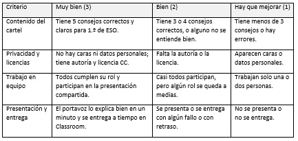

Tarea
- Duración: 2 sesiones
- 110 minutos
- Agrupamiento: grupo base
- 4
Actividad cooperativa dos sesiones (55 minutos). Cada equipo crea en una presentación de Google compartida un cartel con 5 consejos para cuidar la huella digital, pensado para el alumnado de 1.º de ESO.
Cómo se forman los grupos
Grupos de 4, los mismos que usamos en clase, es decir los grupos base de cooperativo. En estos grupos hay chicos y chicas, alumnos que se manejan bien con el ordenador y otros a los que les cuesta más. El alumnado que está aprendiendo castellano va con un compañero que le pueda ayudar. A cada alumno se le asigna un rol, siendo estos:
Coordinador/a: Controla el tiempo y que todos participen.
Investigador/a: Busca los consejos en las páginas 2, 3 y 4 del recurso.
Diseñador/a: Maqueta el cartel en la presentación compartida.
Portavoz: Revisa que no salgan caras ni datos personales, pone la autoría y la licencia y presenta el cartel.
¿Cómo funciona y lo vamos a desarrollar?
Ideas (25 min). Cada uno escribe 4 consejos en el Padlet de la clase. Luego el equipo elige los 5 mejores.
Cartel (30 min). Todos trabajan a la vez en la misma presentación de Google (cuenta de murciaeduca), cada uno en su parte.
Revisión (40 min). Cada equipo revisa el cartel de otro con una lista sencilla: ¿se entiende?, ¿hay datos personales?, ¿tiene autoría y licencia?
Entrega (15 min). El portavoz presenta el cartel en un minuto y el equipo lo entrega en Google Classroom.
